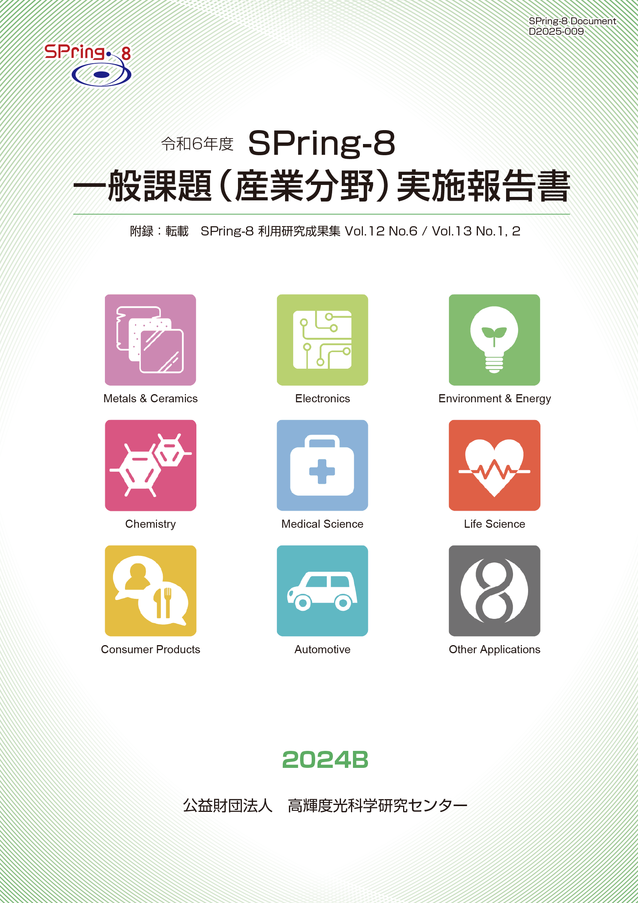
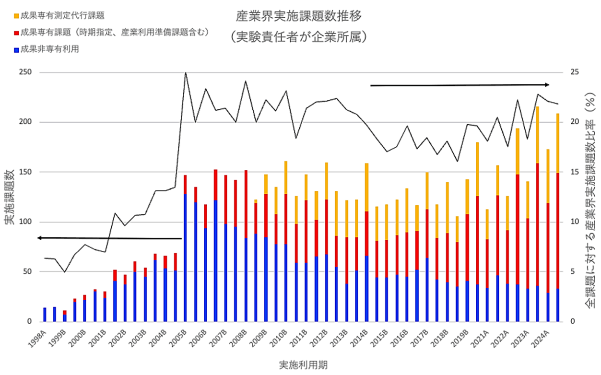

目次

1. はじめに2. 課題募集制度の概要
3. 成果公開の考え方
4. 実施状況
5. 産業利用分野の利用動向
6. 報告書
* 送付を希望される方は、連絡先（氏名、所属、〒住所、E-mail）をご記入の上、 事務局 support@spring8.or.jp までE-mailでご連絡ください。
はじめに
本報告書は2024B期に産業利用分野で審査・採択された一般課題（以降、一般課題（産業利用分野）と呼称）として実施された課題の実施状況の報告を目的として、SPring-8利用研究成果集としての審査を行わなかった課題の報告書を収録したものである。なお、本報告書の刊行は後述する理由により今期をもって終了とする。
本報告書が対象としている課題募集制度の概要
-
一般課題（産業利用分野）
- 新規利用拡大の観点から課題審査において利用経験を考慮する。
- 民間企業利用拡大の観点から課題審査において所属機関を考慮する。
- 課題実施後約2～4か月以内に所定の書式の産業利用課題実施報告書を提出する。なお、この報告書はSPring-8利用研究成果集として審査を受けることも可能である。
- 全採択課題に担当コーディネーターを配置する。
- 科学技術的妥当性に関する審査は
(1)産業基盤技術としての重要性および発展性
(2)社会的意義および社会経済への寄与度
に重点をおいて実施する。
この「一般課題（産業利用分野）」の課題とは、成果非専有の一般課題のうち、課題申請の際に産業利用分野での課題審査を希望した課題（課題審査は課題審査委員会 産業利用分科会が行う）を示す。この課題の申請については、実験責任者もしくは共同実験者に民間企業、または産業界に準ずる機関に所属する者が含まれていることを申請要件としている。産業界に準ずる機関とは、公設試験場及び民間企業からの委託試験・研究を主な事業とする財団／社会法人と定義している。その他に、本制度は以下の５項目の特徴を持つ。
今期の年６回募集注１は、BL01B1、BL02B1、BL02B2、BL09XU、BL13XU、BL14B2、BL19B2、BL46XUの８本の共用ビームラインに加えて、一部共用供出を開始した理研ビームラインのBL16XU、専用ビームラインの兵庫県ビームラインBL24XU（成果専有課題のみ募集）を加えた計10ビームラインにおいて実施された。BL47XUで実施されていた一部マシンタイムの年6回募集（２、３期について各６シフトのみ募集）は制限されたマシンタイムの中で運用することが困難と判断されたため、今季より取り止めとなった。
なお、３本の旧産業利用ビームラインBL14B2、BL19B2、BL46XUの課題申請は、2022B期から産業利用分科会審査の課題以外も受け入れることになった。これにより、これまでこれらの旧産業利用ビームラインを利用することを主目的として産業利用分科会の審査に申請していた学官のユーザーの課題申請が他の学術系分科会への申請にシフトした。この事情を背景として、2023A期よりこの産業利用分科会の審査基準を、より産業界の価値基準に特化する方向に強化した。具体的には、科学技術的妥当性に関する審査の審査基準(1)「産業基盤技術としての重要性および発展性」の観点を、特にその申請課題に関連する「企業」にとって課題で得られる成果がどのような価値があるかに重点を置くこととした。
*注1）一般課題（産業利用分野）だけでなく大学院生提案型課題及び成果専有課題、成果公開優先利用課題も受付。
本報告書が対象としている課題の成果公開の考え方
成果の公開については、他の成果非専有の一般課題と同様に学術誌上への論文掲載（博士論文も含む）もしくはSPring-8利用研究成果集への採録による成果公開が求められる。この産業利用課題実施報告書の提出は「成果の公開」とは認定されないが、これらの報告書は著者からの申し出により課題ごとにSPring-8利用研究成果集としての審査を受けることが可能である。SPring-8利用研究成果集としての審査を受けない実施報告書は、JASRIコーディネーター等による校閲を経て課題実施期が終了して約6か月後に出版･公開されるが、それ以外はSPring-8利用研究成果集としての掲載をもって公開とする。
実施状況
以下に令和6年度2024B期の一般課題（産業利用分野）の応募・採択結果を表1にまとめる。
- 応募・採択結果 一般課題（産業利用分野）
表 1．応募時期及び研究機関別一般課題応募・採択結果
＊ 応募数と採択数には、一般課題と同時に審査される大学院生提案型課題（応募数：A1期 1課題、A2期 0課題、A3期 0課題 ／ 採択数：A1期 0課題、A2期 0課題、A3期 0課題）を除く。募集時期 機関分類 応募数＊採択数採択率（%）第1期募集学官9777.8産業界10770.0合計191473.7第2期募集学官11100.0産業界100.0合計2150.0第3期募集学官100.0産業界11100.0合計2150.0総計231669.6
昨年度同時期の2023B期の課題実施状況を比較すると、まず応募課題数は23課題で、2023B期の41課題の56%に減少している。機関分類の内訳を見ると学官が11課題、産業界（企業）が12課題で、2023B期の学官24課題、産業界17課題と比較すると、産学ともに減少している。この減少傾向は利用制度が変更になった2022B期以降続いており、その原因としては、学官のユーザーについては産業利用分科会審査の申請要件である「共同実験者に民間企業もしくはそれに準ずる機関が含まれること」という制約のない、それ以外の分科会審査への申請にシフトしたこと、産業界ユーザーについては後述の図１のSPring-8の産業界ユーザーの利用動向で示されているように、産業界ユーザーのSPring-8利用が成果専有利用にシフトしているという状況を反映していると考えられる。採択率は昨年度2023B期の65.9に対し、今期の2024B期は69.6％とほぼ同等である。
- SPring-8利用研究成果集としての審査
前記のとおり2011B期より成果公開の扱いが変更になったため、実験責任者の希望に応じて重点産業利用報告書をSPring-8利用研究成果集（現在はSPring-8/SACLA利用研究成果集）として査読審査を受けて公開文書として扱うことも可能とした。放射光施設横断産業利用課題及び産業利用分野の一般課題も同様で、SPring-8/SACLA利用研究成果集として審査を受ける公開文書とすることができる。SPring-8/SACLA利用研究成果集への公開は査読審査が終了し成果審査委員会での承認後となるため、SPring-8/SACLA利用研究成果集に投稿予定の課題は採録していない。このため、今回は2024B期の採録対象課題中14課題と採録対象ではないが提出のあった5課題の報告書を掲載する。また、2024A期報告書発行後に対象課題でSPring-8/SACLA利用研究成果集に掲載された7課題の報告書を付録として掲載する。
- 本報告書刊行の終了について
本報告書は産業界の研究者にとってSPring-8の利用の検討に資する情報として、SPring-8の産業利用の実施状況についての最新情報を産業界の研究者に提供することを目的に、ユーザーの協力のもと、刊行してきた。しかしながら前述の通り、対象とする産業利用分科会審査課題が減少した為、SPring-8利用を検討する為の有効な情報源としての位置付けを維持できるだけの情報量を確保できなくなってきた。産業利用分科会審査の申請課題数が減少した理由の一つは産業界のユーザーの利用が成果専有課題にシフトしたことが大きな理由であるが、新規にSPring-8の産業利用に参入することを検討する産業界の初心者ユーザーにとって、利用料を必要としない一般課題を産業界の価値基準に特化した審査基準で審査を行う産業利用分科会審査が存在し続ける意義は大きい。そこで、産業利用分科会審査による利用課題実施の初心者ユーザーに対するハードルを下げる為、産業利用課題実施報告書の提出義務を2025A期より取りやめることとした。よって、産業利用課題実施報告書の刊行も今回を持って終了する。
産業利用分野の利用動向
-
図1はSPring-8の共同利用が開始された1998年からの利用期毎の産業界ユーザーの実施課題数の推移である。成果非専有利用（青）と成果専有利用で分類して示しており、成果専有利用については成果専有課題（時期指定、産業利用準備課題も含む）（赤）と成果専有測定代行課題（橙）に分類している。黒線で示しているのは全実施課題数に対する産業界ユーザーの実施課題数比率である。この産業界ユーザーの実施課題数比率は2005B期に20%を超えた後、だいたい同程度の水準を維持している。しかしながら、この間に利用形態は大きく変わっており、2005B期には87%が成果非専有利用であったが、その後成果専有利用へのシフトが進み、今期の2024B期には84％が成果専有利用である。この成果専有利用へのシフトを牽引したのが2009年度から開始した成果専有測定代行課題で、2013Aから2018B期にかけて成果専有利用のうち約半分を占めている。近年ではさらにこの成果専有測定代行課題以外の成果専有利用が増加傾向にあり、2024B期ではこの成果専有測定代行課題以外の利用が116件である（成果専有利用の内の約66%）。

図1. 共同利用で産業界ユーザーが実施した課題の実施数推移
報告書
附録 “SPring-8/SACLA利用研究成果集 Section B”より転載
Volume 12 No.6 (https://www.jstage.jst.go.jp/browse/springresrep/12/6/_contents/-char/ja） |
|||
2021B1723 |
BaTiO3に固溶した V の価数評価における HERFD-XAS の有効性検証 DOI 10.18957/rr.12.6.389 |
西村 仁志 | (株)村田製作所 |
Volume 13 No.1（https://www.jstage.jst.go.jp/browse/springresrep/13/1/_contents/-char/ja） |
|||
2019A1655 |
Sm2Co17磁石の局所ヒステリシス特性測定による減磁機構解析 DOI 10.18957/rr.13.1.32 |
藤原 照彦 | (株)トーキン |
2019B1715 |
時間分解 X 線イメージングを利用した Al-Fe-Si 系金属間化合物の晶出挙動の解明 DOI 10.18957/rr.13.1.37 |
北村 智之 | (株)神戸製鋼所 |
2021A1490, 2021A1637 |
ウレタンゴム中における表面修飾セルロースナノファイバーの凝集構造の解析 DOI 10.18957/rr.13.1.40 |
遠藤 崇正 | 宮城県産業技術総合センター |
2023B1568 |
磁気ディスク用アルミニウム合金基板の形状変化に及ぼす残留応力の影響調査 DOI 10.18957/rr.13.1.45 |
北脇 高太郎 | (株)UACJ |
Volume 13 No.2（https://www.jstage.jst.go.jp/browse/springresrep/13/2/_contents/-char/ja） |
|||
2021A1555, 2021A2075 |
軟X線小角散乱を用いた高分子コアシェル構造を有するナノ粒子の粒径および粒径分布解析 DOI 10.18957/rr.13.2.825 |
泉 謙一 | JSR(株) |
附録Ⅱ 「成果公開優先利用」（産業分野）課題 （～2021B）登録済み成果一覧（既報分除く）
発 行 日： 令和 7 年 8 月 27 日
編集・発行： 公益財団法人 高輝度光科学研究センター
「令和6年度 SPring-8 一般課題(産業分野)実施報告書 (2024B)」送付を希望される方は、 連絡先（氏名,所属,〒住所,E-mail）をご記入の上、事務局 support@spring8.or.jp までE-mailでご連絡ください。